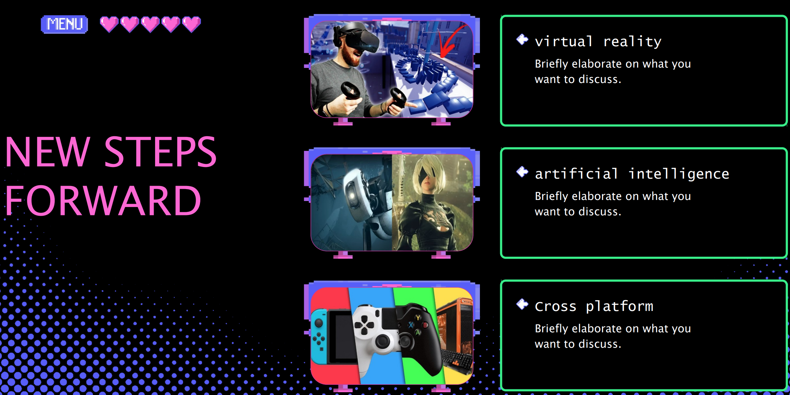
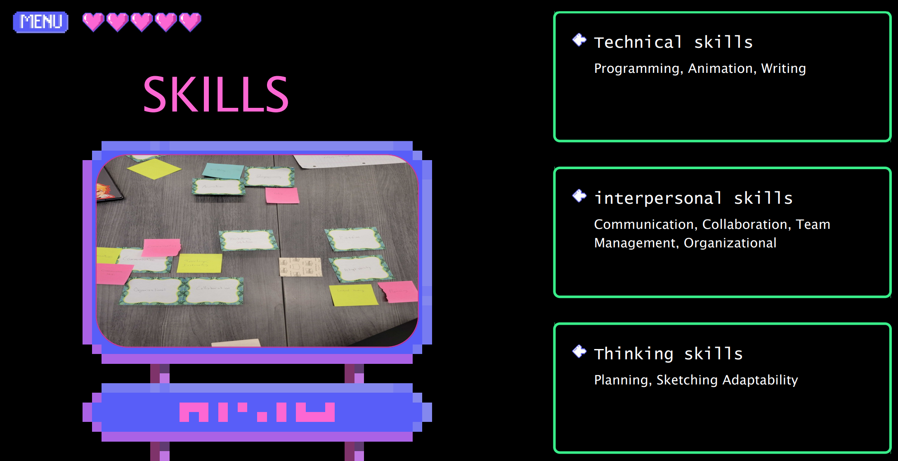
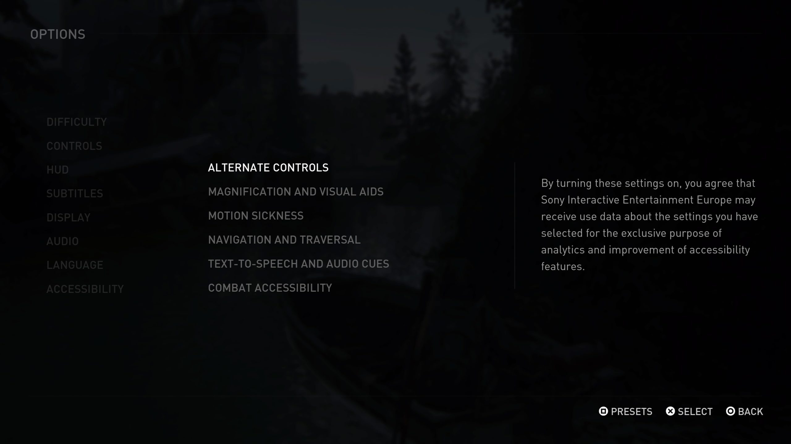
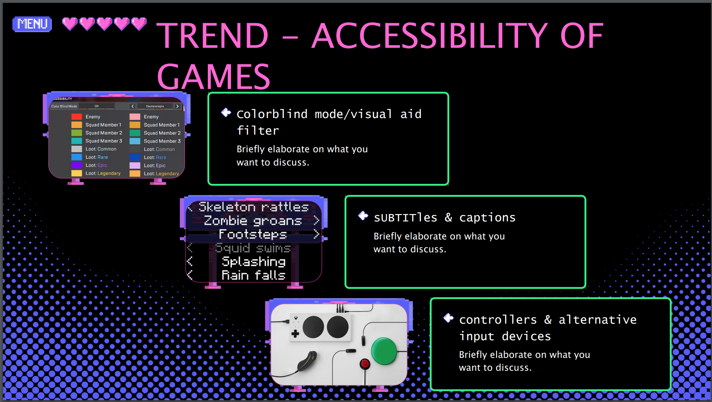

An exploration into the evolving UX practices shaping game design and player experiences.

Group Member: Andrea Medina, Rain Zezula, Samuel Clouse, Zack Wang
Insights into user experience roles, essential skills, and current trends influencing the game industry.
Exploration of different UX roles, such as UX Designer, UI Designer, and Interaction Designer, and their impact on game development.
A deep dive into the critical skills for UX professionals, including user research, usability testing, and design thinking.
Analysis of emergent trends like virtual reality, user customization, and accessibility in gaming.
Our reflections on the project's process and findings, and the lessons we'll carry forward: Throughout this project, our team engaged in comprehensive research, uncovering UX roles and skills pivotal to game design. We reflected on the ever-changing trends and their implications for the gaming industry, particularly in creating inclusive and engaging experiences for all users.

In-depth looks at how UX design principles have been successfully applied in popular video games to enhance player experience and engagement.
'The Last of Us Part II' by Naughty Dog is renowned for its comprehensive approach to accessibility, setting a new standard in the industry. The game features over 60 accessibility settings, catering to a wide range of physical and cognitive disabilities. These settings include options for vision, hearing, and motor skill adjustments, ensuring that more players can enjoy the game regardless of their physical capabilities.
This commitment to accessibility not only broadened the game’s audience but also showcased how thoughtful design can create a more inclusive gaming environment. The game’s accessibility options were developed through extensive user research and feedback from the disabled community, demonstrating the importance of involving users in the UX design process.
By breaking down barriers, 'The Last of Us Part II' has become a powerful example of how inclusive design can significantly enhance the gaming experience, making it more enjoyable and accessible to all players.

Exploring the impact of visual design on communication in UX presentations.
Effective visual design is crucial in UX presentations as it helps to clearly convey complex information and keep the audience engaged. By utilizing elements such as consistent color schemes, clear typography, and informative diagrams, presenters can enhance understanding and retention of the material presented.
For instance, using thematic colors that align with the project's branding can create a visually cohesive experience, aiding in reinforcing the identity and core messages of the project. Similarly, employing clear, legible typography helps ensure that all attendees, regardless of their seating position, can easily read and comprehend the slides.
Diagrams and infographics are particularly effective in breaking down complex data or processes into digestible pieces, making them invaluable tools for UX designers aiming to communicate intricate concepts clearly and succinctly.
